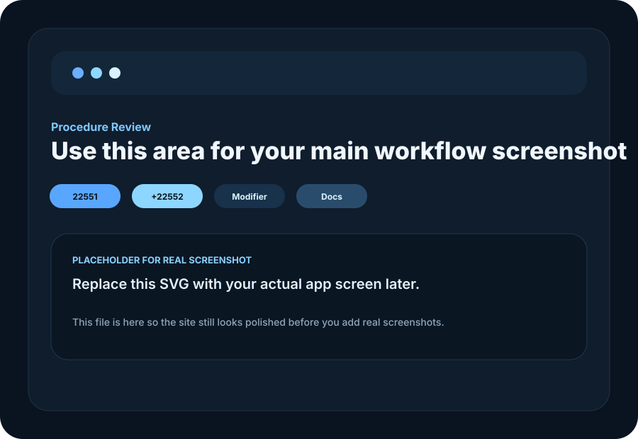
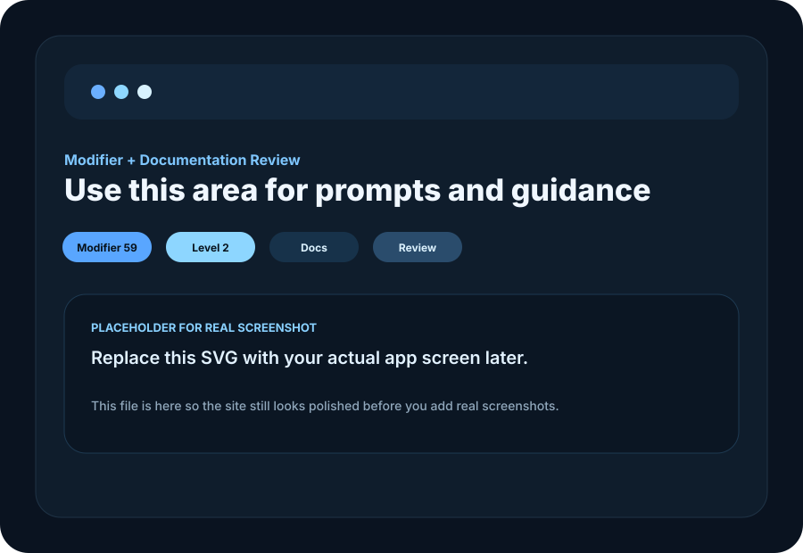

Missed modifiers
Small omissions can materially affect reimbursement and create avoidable billing friction.
Built for orthopedics and spine
MedCode Pro helps surgeons identify missed CPT codes and modifiers, tighten documentation, and reduce undercoding before value slips through the cracks.
Procedure Review
Suggested CPT Codes
Documentation Prompt
Confirm the additional treated level and clearly document decompression and instrumentation details.
Revenue Risk
Potential missed value if the second level is not captured or the note is not specific enough.
Why this matters
That is where modifiers get missed, additional levels get overlooked, and documentation is not specific enough to support the work that was actually performed.
Small omissions can materially affect reimbursement and create avoidable billing friction.
Many surgeons code conservatively because confidence is low and compliance risk feels high.
Even when the work was done, the note may not support the coding decision clearly enough.
How it works
MedCode Pro helps physicians and practices review procedure coding before revenue is lost downstream.

Concrete example
The site should make buyers say, “Yes, that is exactly where coding mistakes happen.”
Procedure
Typical conservative coding may capture only the primary level.
Common miss
The second treated level or needed modifier may not be clearly surfaced.
MedCode Pro review
With documentation guidance tied to the case details.

Compliance-aware
Surgeons do not want a tool that pushes aggressive coding. They want a tool that helps them recognize legitimate missed value while staying grounded in what was actually done and documented.
Book a demo
We’ll walk through the product, show where revenue is commonly missed, and answer workflow questions for your practice.